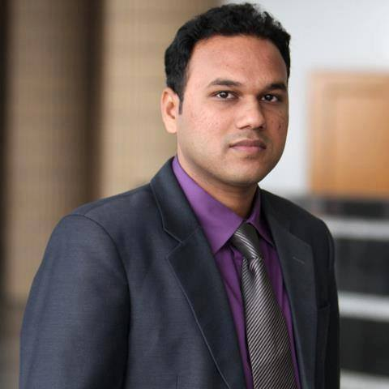

I am a computer science researcher with a demonstrated history of working in the software, data analytics, and visualization industry. I have a Master of Science (M.Sc.) degree in Computer Science from the University of Manitoba, Winnipeg, Canada.
I was privileged to work under the supervision of Professor Pourang Irani in the Human-Computer Interaction (HCI) lab at the University of Manitoba.
I completed my Bachelor of Science (B.Sc.) degree in Computer Science from the Islamic University of Technology (IUT), Dhaka, Bangladesh. I am skilled in Data Science, Data Analytics, Business Intelligence, and Information Visualization.
Currently, I am working as an Analytics & Data Visualization Analyst at the CGI Inc., one of the world's largest multinational IT consulting firm in Canada. In CGI, I am responsible for building skills to use visualization & UX best practices in different situations to build sophisticated and effective analytic outputs to support the delivery of analytics solutions to clients across different industries. I am also resposible for bringing deep experience of data visualization and collaboration with data stakeholders in a team environment. Before joinging CGI, I worked as a Business Intelligence Analyst and Researcher in the Ministry of Health at the Government of British Columbia, Canada. As part of my job in the Ministry, I was involved in data analysis and interactive visualization of raw data to produce useful insights which will facilitate better decision-making for health organizations and professionals.
Please visit other pages to know more about my work.